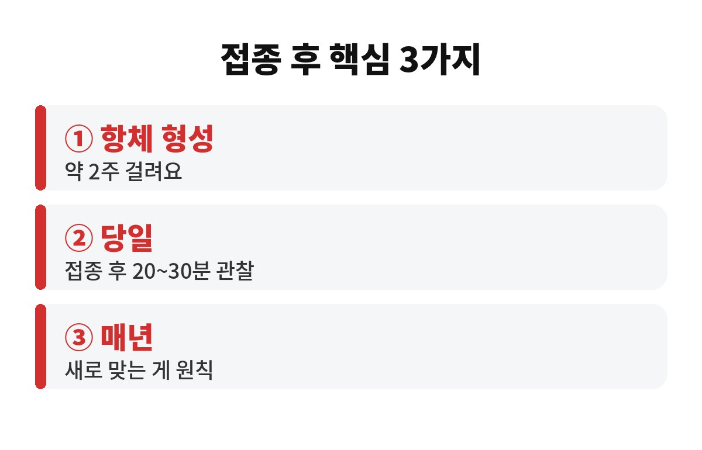
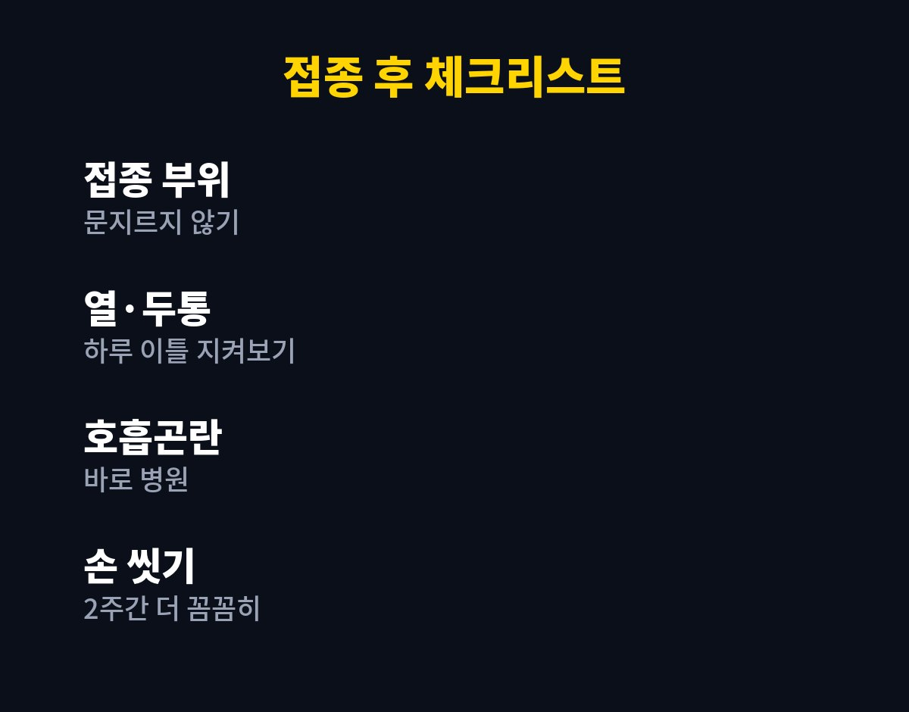

독감 예방접종은 맞은 날부터 바로 보호되는 게 아니라, 항체가 충분히 만들어지기까지 보통 약 2주가 걸린다고 알려져 있어요. 주사 맞았으니 이제 안심이라고 생각하셨다면, 이 2주가 가장 방심하기 쉬운 시간이에요.
특히 부모님이나 어르신이 이미 맞고 오셨다면 오늘 한 번쯤 짚어볼 게 있어요. 맞고도 독감에 걸렸다는 이야기는 왜 나오는 걸까요?
무방비라고 하면 조금 과장이지만, 접종 직후에는 몸이 아직 방어 준비를 마치지 못한 상태인 건 맞아요. 백신이 들어가면 우리 몸의 면역세포가 바이러스 정보를 배우고 항체를 만들기 시작하는데, 이 과정이 하루아침에 끝나지 않거든요. 그래서 접종 후 약 2주가 지나야 제대로 힘을 발휘한다고 설명하는 경우가 많아요.
이 기간에 독감 바이러스를 만나면 걸릴 수도 있어요. 그러면 "주사 맞았는데 왜 걸렸지?" 하고 억울해지는데, 사실은 백신이 효과가 없었다기보다 아직 준비 중이었던 경우가 꽤 많아요. 그러니 독감 예방접종을 하셨더라도 처음 2주는 평소보다 조금 더 조심하는 게 좋아요.
많이 놓치는 부분이 당일 관리예요. 접종 후에는 바로 귀가하지 말고 병원이나 보건소 근처에서 20~30분 정도 머물며 몸 상태를 살피라고 안내하는 곳이 많아요. 드물지만 알레르기 반응이 접종 직후에 나타나는 경우가 있어서 그래요.
접종한 부위는 세게 문지르거나 마사지하지 않는 게 좋아요. 샤워는 보통 가능하지만 주사 부위를 비비지 않는 정도로만요. 그리고 그날은 과음이나 격한 운동은 쉬어가는 게 몸에 부담이 덜해요. 어르신이라면 혼자 보내지 말고 가족이 곁에서 한 번씩 상태를 봐 주시면 훨씬 마음이 놓여요.

접종 후 하루 이틀 정도 접종 부위가 뻐근하거나 미열, 피로감, 근육통이 생기는 경우가 있어요. 대부분은 몸이 면역 반응을 만드는 과정에서 나타나는 일시적인 증상으로 알려져 있어요. 그래서 너무 겁먹을 필요는 없지만, 그렇다고 무조건 "백신 때문이겠지" 하고 넘기는 것도 위험해요.
열이 계속 높거나, 며칠이 지나도 나아지지 않거나, 숨쉬기가 힘들고 얼굴이나 입술이 붓는다면 바로 진료를 받으셔야 해요. 특히 만성질환이 있는 부모님은 증상이 있을 때 참지 말고 병원에 연락하는 게 가장 안전해요. 독감은 노년층에서 폐렴 같은 합병증으로 이어질 수 있어서, 늦게 대처하면 후회할 수 있거든요.
네, 독감 예방접종은 매년 새로 맞는 게 원칙이에요. 독감 바이러스는 해마다 조금씩 모습을 바꾸고, 백신 성분도 유행할 것으로 예상되는 바이러스에 맞춰 달라지기 때문이에요. 게다가 시간이 지나면 몸속 항체 수준도 서서히 줄어들어요.
그리고 접종 후 2주 동안은 손 씻기, 마스크, 사람 많은 곳 피하기 같은 기본 수칙이 여전히 큰 힘이 돼요. 백신과 생활 습관이 같이 가야 효과가 제대로 나요. 달걀 알레르기나 이전 접종 때 이상 반응이 있었다면 미리 의사에게 말씀해 두시는 것도 잊지 마세요.

정리하면 접종 후 2주는 아직 준비 중인 시간이고, 당일 20~30분 관찰과 이후 증상 체크가 안전의 핵심이에요. 우리 부모님은 접종 후에 잘 지내고 계신가요? 오늘 안부 전화 한 통 드려 보시면 어떨까요?
도움이 되셨다면 구독하고 다음 건강 소식도 받아 보세요.
※ 이 글은 일반적인 건강 정보이며 진단·치료를 대신하지 않습니다. 개인 상태에 따라 반드시 전문의와 상담하세요.